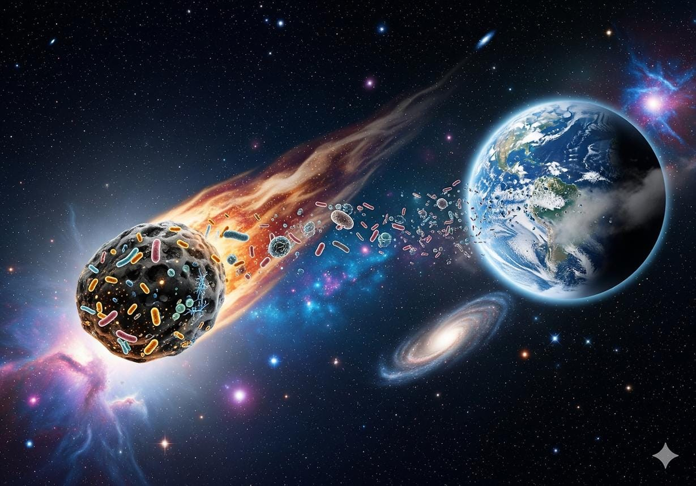

Теория панспермии
Экзогенный занос молекулярных и биогенных предпосылок земной жизни
Основоположники и актуальность
Идея занесения спор предложена Г. Рихтером (1865 г.) и физиком Г. Гельмгольцем (1871 г.). Расчет переноса микрочастиц световым давлением выполнил Сванте Аррениус (1908 г.). В 1973 г. лауреат Нобелевской премии по открытию структуры ДНК Фрэнсис Крик и Лесли Оргел развили концепцию «направленной панспермии». В XXI в. теория актуализирована миссиями NASA (Stardust, OSIRIS-REx) и JAXA (Hayabusa-2).
Суть теории / Гипотеза
Жизнь на Земле не синтезировалась «с чистого листа» исключительно из абиогенного бульона. Аминокислоты, предшественники РНК/ДНК и липиды были доставлены из межзвездного пространства кометами в эпоху поздней тяжелой бомбардировки. Вся биохимия предков человека уходит корнями во внеземной предбиологический синтез.
Приверженцы и опровержения
Около 50% исследователей в астробиологии признают кометную доставку органики и воды фактом. Концепцию защищали астрофизики Фред Хойл и Чандра Викрамасингхе. Около 50% биохимиков классической школы (А. Опарин, С. Миллер) критикуют теорию за то, что она лишь переносит нерешенный вопрос первичного зарождения репликации в космическое пространство.

Доказательства:
- 1. Аминокислоты в хондритах: В метеорите Мерчисон (1969 г.) выявлено более 70 аминокислот с характерным изотопным сдвигом углерода-13, подтверждающим внеземное происхождение.
- 2. Зонды Hayabusa-2 и OSIRIS-REx: В чистейших пробах грунта астероидов Рюгу и Бенну спектрально и химически обнаружены урацил, рибоза и азотистые основания.
- 3. Эксперименты в открытом космосе: Эксперименты «Биориск» и Tanpopo на обшивке МКС доказали, что споры бактерий и Deinococcus radiodurans выживают в открытом космическом вакууме более 3 лет.
- 4. Данные аппарата «Розетта»: В коме комета 67P/Чурюмова-Герасименко обнаружены простейшая аминокислота глицин и фосфор, образующие остов ДНК.